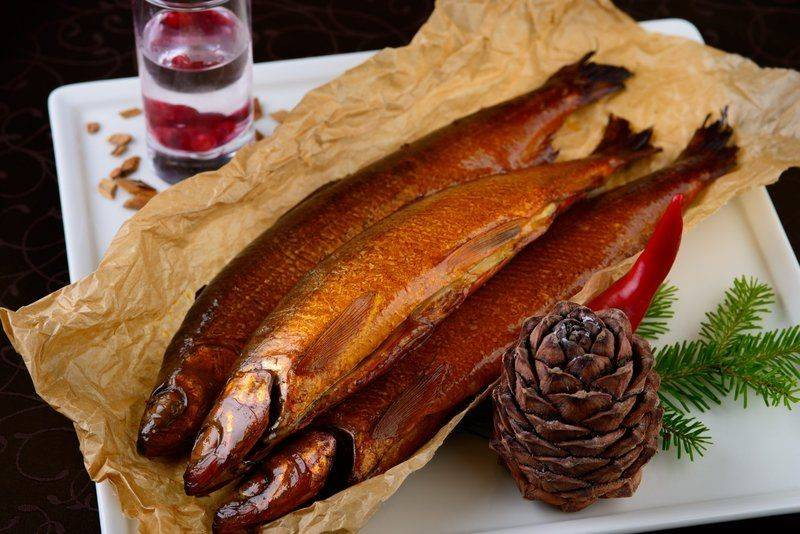

Традиционная кухня Бурятии — это исторически сложившаяся кулинария кочевых племён, простая, вкусная и сытная. Каждый турист просто обязан попробовать уникальную бурятскую кухню. Основу местной кухни составляет мясо, из которого готовят разнообразные первые и основные блюда, а также колбасы. Национальная кулинарная гордость Бурятии — буузы, или позы. В приготовленных на пару из постного теста буузах не бывает ничего, кроме мелкорубленого мяса, лука и специй. Внешне буузы напоминают манты или хинкали, но отличаются от них, во-первых, бульоном, который образуется внутри в ходе варки, а во-вторых — способом лепки: с 33 защипами и аккуратным круглым отверстием вверху. Для начинки используют баранину, говядину и свинину. В Улан-Удэ есть даже экскурсионный маршрут по буузным закусочным и конкурсы на самую быструю лепку.
Второе знаменитое местное блюдо — шулэн, традиционный домашний суп-лапша из баранины. В нём нет ни картофеля, ни моркови, только яичная лапша и мясо. Говорят, в холод шулэн согревает не только тело, но и душу.
Древнейшее бурятское блюдо — саламат. Эта мучная каша — праздничная еда, её готовят ставят на стол не каждый день, в праздники угощают гостей или передают в дацан в качестве подношения. Каша готовится из сметаны и муки в чугунной ёмкости.
А ещё в Бурятии очень популярны блюда из омуля. Вообще-то ловля этой рыбы официально запрещена, но местные жители имеют квоты на вылов. Так что омуль в бурятских кафе и ресторанах предлагается разнообразный: копченый, вяленый, солёный, жареный, запечённый, уха из него и даже буузы с ним.
Байкальский омуль горячего копчения.
Обязательно стоит попробовать блюдо сагудай. Это тонкие ломтики малосолёной свежей рыбы, которую сегодня маринуют в различных маринадах.

Кроме того, известным местным блюдом являются хушуры — это тонкие пирожки, начинённые мясом с добавлением лука и специй.
Следует попробовать также закуску айрхан — сухой творог, приготовленный по особому рецепту: молоко сначала отваривают, затем квасят, на выходе получается творог, из которого скатывают шарики и сушат их. На вкус айрхан похож на сухое молоко, едят его со сладким, кислым или солёным.
Из десертов стоит упомянуть урмэ — по-бурятскоги «пенка». Это и есть самая настоящая молочная пенка, которая снимается с молока во время кипячения, а затем высушивается.
Вкусные, пышные «боовы» (жаренные во фритюре кусочки теста) являются неотъемлемой частью праздничного стола у бурят. Однако, хозяйки часто готовят его и на обычный обеденный стол, чтобы порадовать своих родных ароматным лакомством. Способов приготовления этого блюда существует великое множество, ведь в каждой семье они готовятся по-разному.
Вкуснейшим лакомством в бурятской кухне можно назвать холисо – блюдо, приготовленное из творога, молока и черемухи. Название блюда пошло от бурятского слова холицо – буквально смесь. В старину в этот своеобразный десерт вместо печенья добавляли вареный корень сараны (цветок саранка), а хранили его в сушеной кишке.
В качестве перекуса в Бурятии едят хурууд — домашний молодой сушёный сыр, который хранится до семи лет. Это древнее блюдо кочевников. Хурууд имеет специфический кисловато-солоноватый вкус.
Что касается напитков, то аутентичное спиртное здесь — молочная водка тарасун, которую пьют на всех торжествах и в ходе обрядов. Это самое настоящее зелье — мутное и со странным вкусом, что неудивительно, ведь его делают из скисшего молока. В магазинах тарасун не продаётся, но турист может отведать его в ресторанах местной кухни. Его подают холодным к буузам.
Кроме того, весьма неплоха настойка на кедровых орешках, часто с добавлением облепихи.
Традиционный чай в Бурятии — зелёный или чёрный с маслом и солью, сытный и согревающий в холодный сезон.